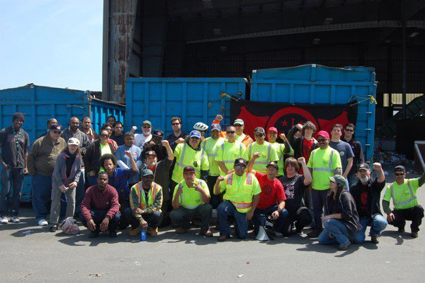

Submitted on Fri, 08/25/2017 - 7:47pm
By the Bay Area IWW - It's Going Down, August 24, 2017
 Workers at Buyback, a recycling centre in Berkeley, have walked off the job this morning after the payment of their wages was delayed without explanation.
Workers at Buyback, a recycling centre in Berkeley, have walked off the job this morning after the payment of their wages was delayed without explanation.
The workers, who are members of the Industrial Workers of the World, discovered at the start of their shift that none of them had received their scheduled payment for the previous fortnight’s work, which was due to come through earlier this morning.
This the third occasion this year that wages have not been paid on time – something that can cause extensive problems for the finances of workers and their families. After turning up at 8 AM this morning and being offered no explanation from management for the error, Buyback workers held a union meeting and voted 18-0 to immediately walk out.
Buyback workers have already struck twice this year – the first an unannounced half-day walkout during the February 16 ‘Day Without Immigrants,’ and the second a two-hour stoppage to hold a celebratory barbecue on May 1.
Workers have not yet returned to work and it’s unclear at this stage whether the action will continue into tomorrow.
Submitted on Tue, 05/07/2013 - 7:14pm
 By x356039 - May 2, 2013
By x356039 - May 2, 2013
Disclaimer: The views expressed here are not the official position of the IWW (or even the IWW’s EUC) and do not necessarily represent the views of anyone but the author’s.
In the accepted limits of debate in Washington and Wall Street the main argument by proponents of the fossil fuel industry is the same as its always been: do you want to protect the environment or create more jobs? They argue expanding fossil fuel exploitation, in spite of the proven risks to the environment and public health, is necessary for the sake of job creation. By building Keystone XL across the Great Plains, opening the Powder River Basin to coal interests, expanding offshore drilling, and opening up new lands to fracking the fossil fuel dinosaurs claim our economy will recover & energy independence will be achieved. When confronted with the facts on clean energy sources like wind and solar power fossil fuel proponents argue clean energy is too expensive. They claim it would not be cost-effective to build a green energy economy and that it would lead to a decline in standard of living.
Quite contrary to the boldest of claims made by those dinosaurs the facts show shifting to a clean energy economy would create more jobs, cost less money, and easily exceed all performance needs. Research by the Renewable & Appropriate Energy Laboratory at University of California, Berkeley shows the fossil fuel industry's claims of better job creation rates compared to green, clean energy are vastly overblown. As shown in this chart below renewable energy sources produce as many if not more jobs per megawatt of capacity as traditional dirty sources of electricity:
Submitted on Sun, 01/20/2013 - 3:44pm
 Beyond Chron (January 15, 2013)
Beyond Chron (January 15, 2013)
http://www.BeyondChron.org/news.php?itemid=10856
Marc Norton Online
http://MarcNorton.us/153222/154222.html
Brothers and sisters from the Industrial Workers of the World (IWW) put in a lot of legwork on the Hotel Frank picket line, so it was only natural that I responded to their call to join an IWW picket line at the Berkeley Ecology Center last Thursday, January 10. The Ecology Center brags on its website that they “provide good, green-collar jobs.” Try telling that to the thirty workers and supporters who were on the picket line last Thursday.
Submitted on Tue, 01/08/2013 - 9:12pm
For Immediate Release: Contact Bay Area IWW (510) 845-0540
Fellow Workers and Supporters of the IWW and the working class: Negotiations for a new contract with the Ecology Center are not going at all well. Their latest proposal includes a worse Kaiser plan, making the workers pay for part of the premium, no raise after the first year of the contract, and a reduction in what the employer pays into the workers' annuity plan. Workers are saying that all they've been getting in recent contracts are cuts and where will it all end?
The Ecology Center is openly saying that they expect "more work for less pay." A strike on Feb. 1 remains possible. We are organizing a protest rally at the work place for this Thursday at noon. The rally will be held at the corner of Second and Gillman Streets, in Berkeley (near the Gilman Street exit off of Eastshore Freeway / I-80 & 580) where it will be more visible. We urge all supporters to attend and to bring friends.
The IWW has had a union contract with the Ecology Center since 1989.
Submitted on Fri, 05/04/2012 - 10:30am
By John Reimann
The boss was sweating bullets. The IWW was in the house, his workers were about to stop work for May Day, and he wasn’t happy about it at all. But there was nothing he could do about it since all his workers were IWW members and they support the union. This was at Buy Back recycling in Berkeley, which functions under an IWW contract as does Curbside Pickups, the work place next door, whose workers were also about to stop work for May Day, 2012.
IWW organizers and union members on the job had been organizing a stop-work rally for the previous two weeks and here it was.
Workers from both work places stopped work for about an hour to celebrate International Workers Day in a work place rally. Most of those who spoke were the Curbside and Buy Back workers themselves, and they spoke about the conditions of their jobs and the attacks on their health benefits and other such concerns. A worker at Curbside had recently had a very serious injury (which resulted in having to have a foot amputated). Several Curbside workers commented on this and the belief that the long hours of overtime may well have been related to this, because when workers are tired accidents are more likely to happen. There were several speakers from outside the work place including Boots Riley, the revolutionary Oakland rap artist, who spoke among other things about his experiences with workers in Italy. Other fellow workers spoke on a number of issues including the history of May Day, issues for grocery workers, and on privatization and the union busting in the Oakland public school system. One noteworthy message of greeting was read from a representative of the Pakistan Labor Party. The message referred to some of the strikes in Pakistan recently and concluded by calling for the workers of the world to unite. The rally concluded with a speech from a fellow worker who called for revolution (and got a good hand of applause for that).
We all gathered round for a group photo taken by one of our members. The executive director of the Curbside operation just “happened” to be on hand and came running over, a big s___t-eating grin spread over his face. He offered to take the photo for us so that we could all be in the photo at once. We sent him packing.
It was the perfect end to a great event. We started the event by making one boss sweat. We ended it by telling another to get lost. What better way to celebrate International Workers Day?